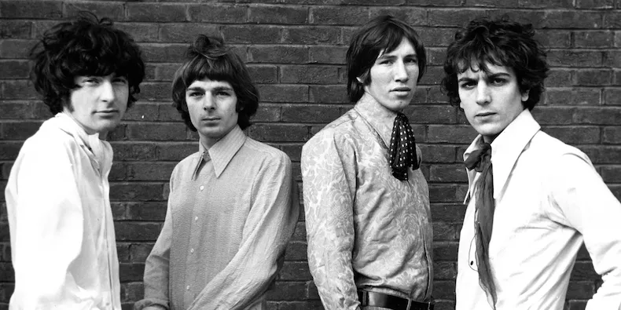

Les évènements
La création de Pink Floyd (1965) : Les débuts d'une légende
La rencontre de Syd Barrett, Roger Waters, Nick Mason et Richard Wright a marqué la naissance du groupe, pionnier du rock psychédélique
Le succès mondial de The Dark Side of the Moon (1973)

Cet album mythique a propulsé Pink Floyd au rang de légende avec ses thèmes universels et son succès phénoménal.
The Wall et la vision de Roger Waters (1979)
Un album concept révolutionnaire explorant l’aliénation, accompagné de performances scéniques spectaculaires.
La séparation de Roger Waters et la renaissance du groupe (1985)
Un tournant marqué par des conflits internes, mais aussi par la résilience du groupe sous l’impulsion de David Gilmour